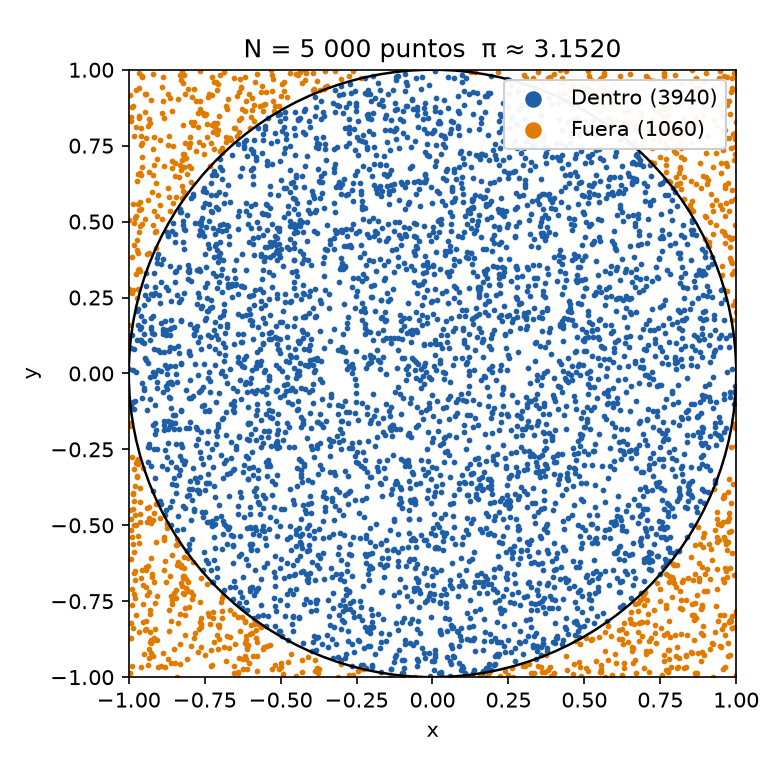
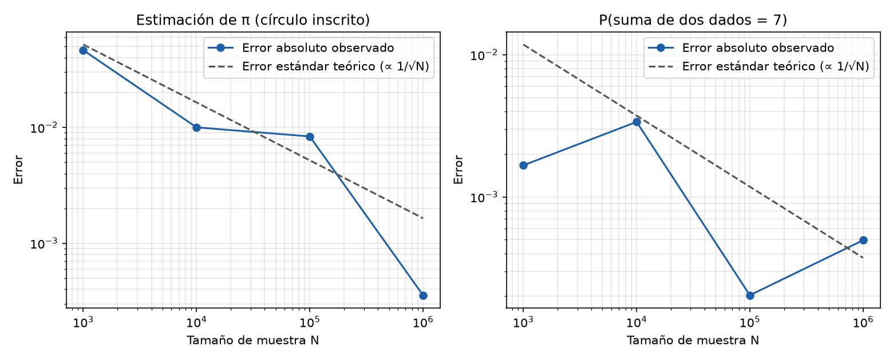

Simulación · Unidad 2 · APE 7
Alejandro Padilla · Computación, ciclo 5
Universidad Nacional de Loja · Docente: Ing. José O. Guamán Q.
02 · La idea
Repetir un experimento al azar y contar los aciertos
03 · Modelo 1: el círculo

04 · Modelo 2: mi modelo propio
05 · Generador propio
a = 1664525 · c = 1013904223 · m = 2³² · igual en Python y Java
06 · Arquitectura
Misma estructura en los dos lenguajes
Modelo calcula
Vista: tablas y gráficas
Controlador coordina
Modelo calcula
Vista: tablas
Controlador coordina
18 pruebas automáticas
07 · Resultados del modelo 1
error frente a 3.141593
08 · Tamaño de muestra y error

09 · Python frente a Java
π, un millón de puntos
785 487 aciertos
0.519 s
785 487 aciertos
0.011 s
Solo cambia el tiempo
10 · Conclusiones